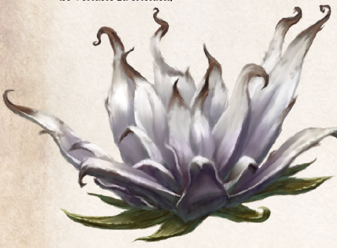

Es ist ungeklärt, ob der Graue Lotos eine Neuschöpfung Thargunitoths ist oder ob die Präzentorin der Heulenden Finsternis vorhandene Pflanzen nahm und pervertierte. Fest steht allein, dass Grauer Lotos in den Teichen, Sümpfen und an den Seeufern der Warunkei vorkommt und schon manchen Unvorsichtigen ins Verderben riss. Ein erster flüchtiger Blick vermittelt oft den irrigen Eindruck, ein verkümmertes, zumindest aber sterbendes Exemplar eines Lotos vor sich zu haben. Die aschgraue Blüte inmitten weißfleckiger, graugrüner Blätter erinnert bestenfalls an ein von Schimmel überzogenes Exemplar - ein Eindruck, den der schwache, modrige Geruch, der von ihr ausgeht, nur verstärkt. Doch dies ist ein gefährlicher Trugschluss, denn wie bei allen giftigen Lotosarten ist es der Blütenstaub, den es zu fürchten gilt.
Einmal eingeatmet, ruft er schwerste Alpträume hervor. Seelenkundige, die Opfer des Grauen Lotos behandelt haben, vergleichen diese Träume mit der Besessenheit durch einen Nephazz. Die Alpträume sollen gar anfällig für die Versuchungen der Erzdämonin machen. Wie viele arglose Reisende Thargunitoth auf diese Weise ins Netz gingen, ist unbekannt. Die Kirchen der Zwölf, allen voran beide Boronkirchen, trachten danach, den glücklicherweise sehr seltenen Grauen Lotos auszurotten, möglichst ohne ihrerseits - oder auf Seiten der zu diesem Zweck angeworbenen Abenteurer - allzu große Verluste zu erleiden.
Verbreitung:
Landschaftstyp: Grasländer, Heiden und Steppen, Sümpfe, Marschen und Moore, Wälder
Regionen: in Teichen und an Seeufern (vor allem Warunkei, überall sonst sehr selten)
Suchschwierigkeit: -3
Bestimmungsschwierigkeit: -3
Anwendungen: 1/1/2/2/3/3
Wirkung:
Roh:
Berührung: keine
Einatmung: Der nächste Traum nach Einatmen des Blütenstaubs ist ein furchtbarer Alptraum von Untoten und Geistern, oft aus dem Gefolge Thargunitoths.
Jede Minute des Traums fügt dabei 1 SP zu, die Regeneration entfällt.
Das Opfer kann normal geweckt werden, erwacht jedoch nicht von selbst.
Optional können hier die Fokusregeln für Traum-Regeln angewendet werden.
Die Wirkung ist mit dem Erwachen beendet.
Mehrfaches Einatmen verändert die Wirkung nicht.
Verzehr: keine, für Gerüchte zur Frucht siehe Volksbrauchtum
Verarbeitet: noch keine bekannt
Preis: 5 / 10 Silbertaler
Rezepte:
Elixiere: Fingerfertigkeitselixier
Volksbrauchtum: Einem Gerücht zufolge bildet eine von fünf Pflanzen alle fünf Jahre sogar eine Frucht aus.
Wird sie verzehrt, soll dies zu doppeltem Schaden während des Traums führen.
Der Nekromantenrat von Warunk ließ angeblich nach der Frucht suchen, und auf dem Schwarzmarkt sollen Höchstpreise für sie ausgelobt worden sein.
Schließlich wurde berechnet, dass nur drei Früchte ausreichen sollen, um selbst riesige magische Wesen wie Drachen in den Schlaf zu schicken.
Haltbarkeit:
Roh: siehe Haltbarmachung